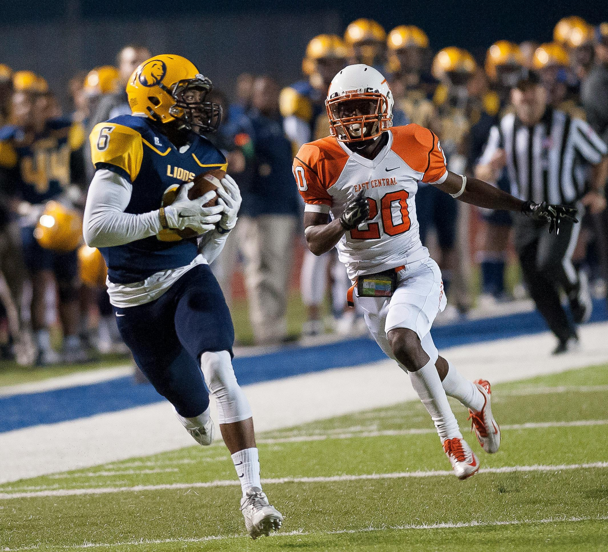
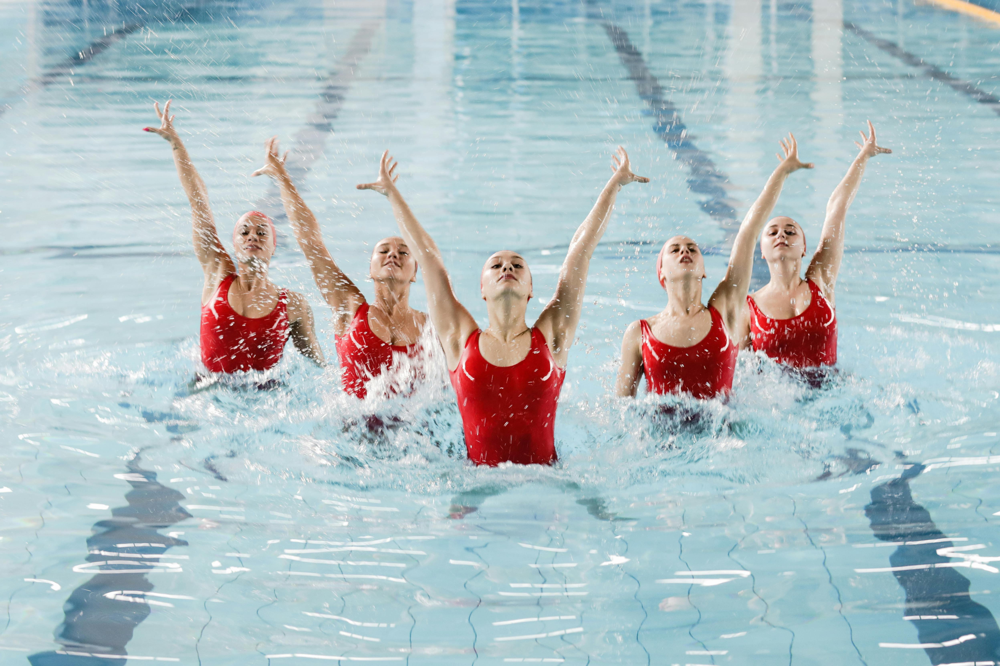

Rugby à 7 - Un Mélange de Vitesse et de Force
Tournoi Masculin
Le rugby à 7 est un sport dynamique et intense,
et le tournoi masculin est l'un des événements les plus attendus des Jeux Olympiques.
Les meilleures équipes du monde entier se réunissent pour s'affronter dans des matchs courts mais palpitants.
Le rythme effréné du rugby à 7, associé à l'agilité et à la puissance des joueurs, garantit un spectacle captivant.
Chaque essai peut faire la différence dans ces affrontements intenses, où les compétences individuelles et la stratégie
d'équipe sont mises à l'épreuve. Ne manquez pas l'opportunité de voir les stars du rugby à 7 en action, lutter pour l'or
olympique dans une ambiance électrique.… Lire plus
Cyclisme sur Route - L'Épreuve d'Endurance Ultime
La course de cyclisme sur route est l'une des épreuves les plus ardues des Jeux Olympiques. Les cyclistes doivent faire preuve d'une endurance exceptionnelle, d'une stratégie acérée et d'une volonté de fer pour parcourir des kilomètres sur des terrains variés. Des montées ardues aux descentes rapides, chaque segment de la course teste les limites physiques et mentales des participants. Les fans de cyclisme apprécieront la tactique d'équipe, les échappées audacieuses et les sprints finaux qui peuvent changer le cours de la compétition en un instant.
Venez vivre l'excitation de cette épreuve mythique et encouragez les athlètes qui repoussent les frontières de l'exploit humain.
… Lire plus

Basketball - La Quête de la Gloire
L'impact de l'IA sera aussi massif que l'impact d'Internet et de la transformation numérique au cours des 30
dernières années. De plus, dans 30 ans, une génération numérique sera aux commandes de la politique,
de l'économie, des affaires et du domaine social, habituée à obtenir des informations par le biais de canaux numériques.
Si l'humanité parvient à établir des règles du jeu acceptables qui minimisent les risques associés à l'intelligence artificielle,
chacun d'entre nous pourrait avoir un assistant numérique personnel sans lequel nous ne pourrions pas nous passer,
tout comme nous ne pouvons actuellement pas nous passer de téléphone. … Lire plus

Football - La Bataille pour la Suprématie
Le tournoi de football aux Jeux Olympiques est un événement où chaque match est une véritable bataille pour la gloire. Les équipes, composées de jeunes talents et de stars établies, s'affrontent avec passion et détermination pour décrocher la médaille d'or. Chaque rencontre est remplie de moments de suspense, de stratégies élaborées et de performances individuelles exceptionnelles. Les fans peuvent s'attendre à des buts spectaculaires, des arrêts incroyables et des passes millimétrées. Ne manquez pas l'opportunité de vivre l'intensité et l'émotion du football olympique,
où chaque match est une nouvelle page de l'histoire sportive qui s'écrit sous vos yeux. … Lire plus

Natation - La Grâce et la Puissance dans l'Eau
100m Papillon
La course de 100m papillon est l'une des épreuves les plus spectaculaires de la natation olympique. Les nageurs doivent faire preuve d'une technique impeccable et d'une puissance incroyable pour traverser la piscine à une vitesse fulgurante. Chaque mouvement compte, et les marges de victoire sont souvent très étroites. Les spectateurs peuvent s'attendre à une compétition féroce où les meilleurs nageurs du monde donneront tout pour décrocher l'or.
200m Nage Libre
Le 200m nage libre est une épreuve qui combine endurance et vitesse. Les nageurs doivent gérer leur énergie tout au long des quatre longueurs de piscine, ce qui en fait une course stratégique autant que physique. Les fans pourront voir des virages précis et des accélérations impressionnantes alors que les athlètes se battent pour la première place. C'est une épreuve où chaque seconde compte et où les champions se distinguent par leur détermination et leur technique raffinée.
Relais 4x100m
Le relais 4x100m est toujours un moment fort des compétitions de natation, mettant en valeur la cohésion d'équipe et la vitesse. Chaque nageur doit donner le meilleur de lui-même, car une seule erreur peut coûter la victoire à toute l'équipe. Les transitions rapides et les performances individuelles exceptionnelles sont au cœur de cette épreuve, offrant aux spectateurs un spectacle palpitant jusqu'à la dernière touche. C'est une course où l'esprit d'équipe et l'excellence individuelle se rencontrent pour créer des moments inoubliables.
… Lire plus

Première Mi-Temps
Le coup d'envoi est donné par l'Équipe A, qui commence immédiatement à imprimer un rythme rapide au match. Dès la 5e minute, l'attaquant vedette de l'Équipe A, connu pour sa vitesse fulgurante, réalise une percée spectaculaire, dribblant deux défenseurs avant de décocher une frappe puissante vers le but. Le gardien de l'Équipe B plonge de tout son long et parvient à détourner le ballon d'une main ferme, déclenchant les acclamations du public.
L'Équipe B ne tarde pas à réagir. À la 15e minute, leur milieu de terrain orchestrateur effectue une passe millimétrée qui traverse la défense adverse, trouvant leur attaquant en position idéale. Ce dernier tente une volée audacieuse, mais le ballon s'écrase sur la barre transversale, laissant les supporters de l'Équipe B en haleine.
À la 30e minute, l'Équipe A ouvre enfin le score. Sur un corner bien exécuté, le défenseur central s'élève au-dessus de tout le monde et place une tête imparable dans le coin supérieur du but. 1-0 pour l'Équipe A ! La foule est en délire. … Lire plus